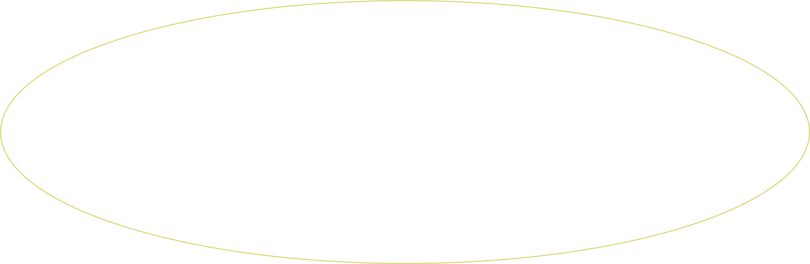
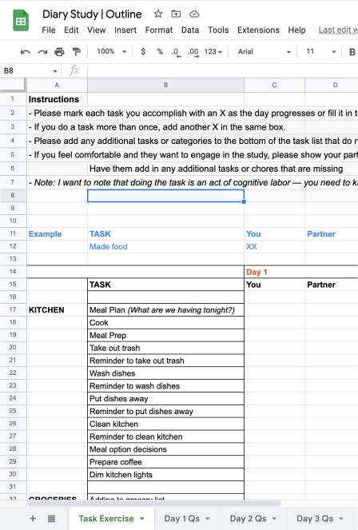

Answer each question by clicking on the corresponding box. If the cognitive labor is shared equallty, click on
both boxes.
If the task isn’t applicable to you, leave the boxes blank.
DIRECTIONS
Let’s break down your cognitive labor and division of household work between you and your partner.

Take note of any emerging patterns
as you’re answering the questions. Are these chores divided intentionally?
The list might feel long but this is a fraction of home labor tasks performed. If you have children, the work
compounds.

I conducted a week-long diary study and exercise where I had individuals track their household labor. After
each day, they then reflected on their cognitive labor and division of household labor.
Here is a link to the diary study
if you are curious about tracking your own daily labor.